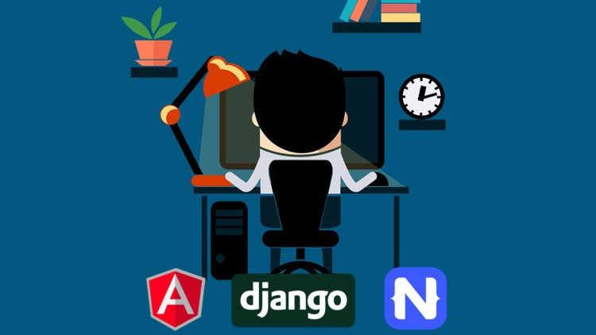
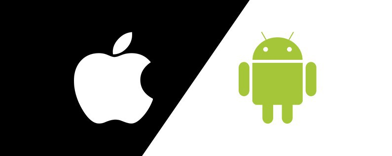
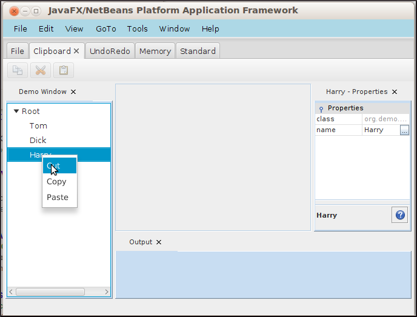

Website Design
At Mup Web Design we go above and beyond to deliver to our clients requirements. We use the cutting edge of web development technologies to provide high quality web design services. If there is any aspect to this website or any other website for that matter, that sparks your interest, an implementation can be made. We can mimic other websites and make them custom for you.
Things you can get in your new website:
- Navigation bars with links and other crucial information
- Services listed
- Contact forms
- Social Media links
- Calendar integration
- Video integration
-
Photos in a slideshow or standalone
-
A wide range of domain options with brand new domain endings
- Premium hosting with Amazon Web Services
Pricing
We offer mutiple payment plans. You can choose from once off, monthly or yearly payment options. We accept Visa, Mastercard, SEPA bank transfers, cash and PayPal transfers. We're sure there's an option there that will meet your needs.
Our websites are:
- Fast
- Affordable
- High quality
- Designed with the customer put first
- Responsive. Will work on all internet connected devices. Phone, tables, laptops and desktops.
- Curated to make the experience as easy as possible.

Full Stack Web Development
What is full stack web development? Full stack web development is dynamic, database oriented and has a back end. So, what exactly does that mean? By dynamic, we mean the content of the website changes. For example, new products being added, or a customer adds to a cart. Facebook, Twitter and Youtube, to name a few
are full stack web applications. They have content that is loaded from a database and a content delivery network, which changes over time. Your website can be full stack if you so wish, some of the examples of what we can do, are products listed, contact forms, login logout, add to cart, blog posts and much more. If you have an idea for a website that, has content that changes from an administerative level user and serves customers,
look no further, we've got you covered.
Technologies
- Angular
-
Bootstrap
- SCSS
- Python
- Django
- MySQL
- Java
- Spring Boot
- ORM

Ecommerce Stores
What can we do for someone who just wants a simple store to sell their products? The answer is Shopify. We can set up a Shopify store for you, with your products, prices, images, descriptions, add to cart button, shopping cart, checkout and extremely secure. Shopify
is the leader of online store generators and will likely be the best option for you. They feature an administerative interface, which shows you your orders, customer information, statistics and so much more. Shopify is very easy to use and is very cheap.
Mobile App Development
Mobile app development is the process of undertaking software development processes to produce an app that works on a smartphone. There are many tools out there to help software engineers/developers to create these apps. Examples include Android studio and XCode for iOS. There is also cross platform design frameworks
that allow us to create websites for iOS and Android, from a single codebase i.e. one project. Dart and Flutter are the programming language and framework we use to create apps for iOS and Android.
What can you get in your new mobile app:
- Header bars
- Cards
- Forms
- Tabs
- Bottom tabs
- Photos
- Database and backend integration
It is also possible for a companion app to be developed for your new website or full stack web application. This app will be a complement to your website and will provide your customers with another medium to do business with you. You can get an ecommerce app,
that integrates with the same database as your full stack web application ecommerce store, to show the same products and have all the orders come to the same place, from both sources.

Desktop Application Development
Desktop application development is the process of undertaking software development to produce an app that works on a desktop machine (Windows, MacOS or Linux). An application of this might be an administerative panel that works on your machine that manipulates that database of your website/mobile app companionship. It could allow you to add products, change prices, review customer account information, change login credentials, perform updates to products or to delete a user. There are alse many other applications of where a desktop application would be useful.
Do not fear, we use cross platform languages and frameworks (Java & JavaFX) to produce an application that will work on any operation system mentioned previously aslong as it has Java installed.
Things you can get in your new desktop app
-
Menu bar
- Status bar
- Tabs
- Listviews
- Labels
- Database oriented
- Splash screen
- Login form

Graphic Design
Graphic design is the process of using image manipulation software to produce an image. It is particularly useful if you want to create a logo, a banner or video thumbnail. We, at Mup Web Design use Photoshop to create images for your website or marketing campaigns. The possibilities are endless, we can go as far as your imagination can. Images are typically in .jpg, .png or .bmp and each image type has its own applications. PNG is particularly useful when you want an image with a transparent background. This is likely what we will be using to create your logo.

Consultation
Over the years, we have gained a lot of experience establishing businesses and creating their digital footprint. We offer consulting services FREE OF CHARGE to help you get your new website or other product you purchase from us, out there into the digital world.
Things we can help with:
-
Google Maps listing (Google My Business)
- Creative inspiration
- Training
- Strategy planning
- And more!